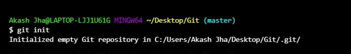
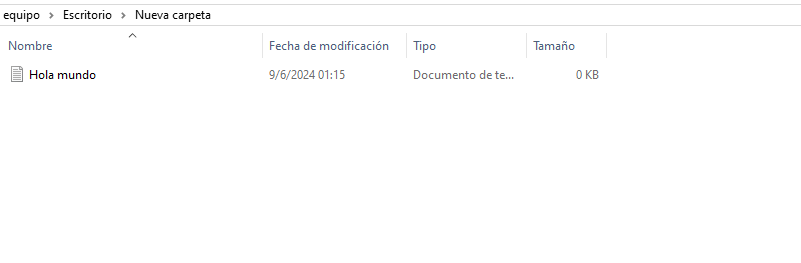
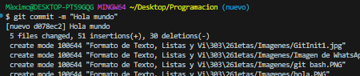

-
Crear un repositorio
El primer paso será crear un repositorio, que se hace seleccionando con clic izquierdo en una carpeta que servirá como recipiente, con GIT BASH.
Luego nos saldrá la terminal de git
Luego tendremos que colocar el siguiente comando: git init
 -
Agregar un archivo

Podemos guardar cualquier tipo de archivo, pero para hacerlo fácil usaremos un .txt. Primero lo creamos y le damos nombre ("Hola Mundo").
Después en el GIT Bash escribimos git add . esto hará que se guarden todos los archivos en el repositorio.Nota: los archivos se guardaron pero no se tiene registro de los cambios.
-
Guardar el registro de los cambios
Para guardar nuestros cambios, vamos a la terminal git bash y escribimos git commit -m "Hola mundo" (aunque puede ser cualquier cosa dentro del "").
Después escribiremos en el archivo "hola mundo" y volveremos a escribir en la terminal git bash git add . y luego git commit -m "Texto agregado".
-
Volver a versiones anteriores
Ahora que tenemos dos commits, podemos volver a versiones anteriores. Debemos escribir el comando git log, que nos dará un registro de todos nuestros commits.

Luego tomaremos el momento al que queramos volver con el comando git checkout "nombre del commit". Esto hará que volvamos al estado seleccionado.